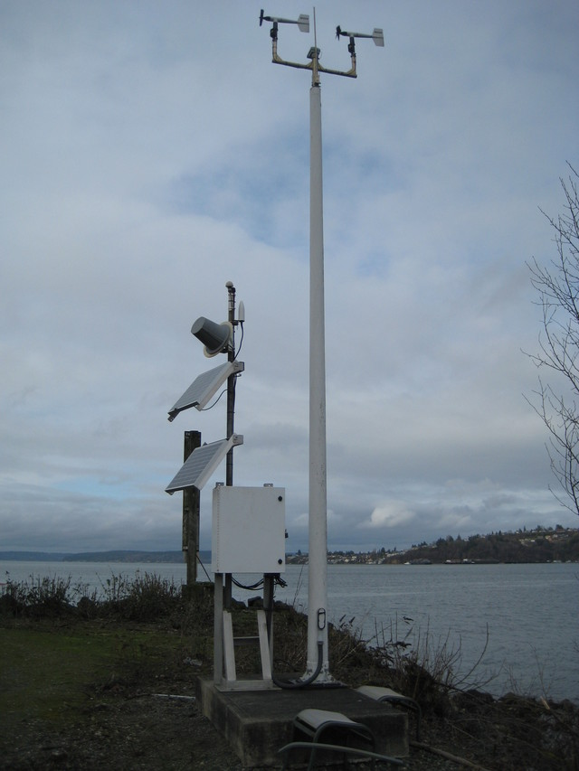
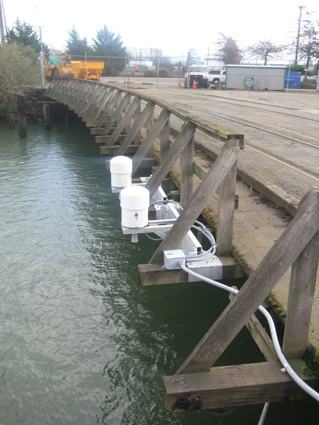

if ("tidyverse" %in% rownames(installed.packages()) == 'FALSE') install.packages('tidyverse')
if ("plotly" %in% rownames(installed.packages()) == 'FALSE') install.packages('plotly')I searched the NDBC map for the stations closest to my collection site at Owens Beach, Point Defiance Park in Commencement Bay, Tacoma.
I found the following stations:
Station TCMW1 9446482 Tacoma, Met, WA - air temp

Historical data: https://www.ndbc.noaa.gov/station_history.php?station=tcmw1
Station TCNW1 9446484 Tacoma, WA - water temp - tide height

Historical Data: https://www.ndbc.noaa.gov/station_history.php?station=tcnw1
1 Install Packages
2 Load packages
library(tidyverse)
library(plotly)# make a data directory, if there isn't one already (-p option will make one only if it isn't already there, otherwise it will do nothing)
mkdir -p data3 Use curl to get NDBC data
Pull data from the year 2021 in which the June record-breaking heat wave occurred…
# navigate to data directory
cd data
# download 2021 data from station TCNW1 NDBC into the data directory
# this station has water temp in F
curl -O https://www.ndbc.noaa.gov/data/historical/stdmet/tcnw1h2021.txt.gz
# download 2021 data from station TCMW1 NDBC into the data directory
# this station has air temp in F
curl -O https://www.ndbc.noaa.gov/data/historical/stdmet/tcmw1h2021.txt.gz4 gunzip data files
gunzip data/tcnw1h2021.txt.gz
gunzip data/tcmw1h2021.txt.gz5 Read data into R and look at it!
read_tsv# Read the first two rows separately to get column names
column_names <- read_table("data/tcnw1h2021.txt", n_max = 2, col_names = FALSE)
# Use the first row as column names
column_names <- column_names[1, ]
# read in data but skip the first two rows
tcnw12021 <- read_table("data/tcnw1h2021.txt", col_names = FALSE, skip = 2)
# Set column names
colnames(tcnw12021) <- column_names
# Print the first few rows of the data
print(tcnw12021)Make the UTC timestamp work
# Concatenate into datetime stamp (these are UTC)
tcnw12021$datetimeUTC <- as.POSIXct(paste(tcnw12021$`#YY`, tcnw12021$MM, tcnw12021$DD, tcnw12021$hh, tcnw12021$mm),
format="%Y %m %d %H %M")Get rid of NA data.. which appears to show up as 999
temps_subset <- tcnw12021 %>%
select(ATMP, WTMP, datetimeUTC)
temps_subset <- temps_subset %>%
mutate_all(~ replace(., . == 999, NA))Graph air and water temps with datetimeUTC on X axis and air(ATMP) & water(WTMP) temp on Y axis
temps <- ggplot(na.omit(temps_subset), aes(x = datetimeUTC, y = WTMP)) +
geom_point()+
theme_bw()
ggplotly(temps)Seriously!? The station data cuts out in May!?
What’s the next closest station that has June data?
Citation
BibTeX citation:
@online{tanja,
author = {Tanja, Sarah},
title = {Environmental {Landscape} of an {Intertidal} {Heat} {Wave}},
date = {},
url = {https://sarahtanja.github.io/quarto-blog/posts/projects/anemone/heat-stress/heat-wave.html},
langid = {en}
}
For attribution, please cite this work as:
Tanja, Sarah. n.d. “Environmental Landscape of an Intertidal Heat
Wave.” https://sarahtanja.github.io/quarto-blog/posts/projects/anemone/heat-stress/heat-wave.html.